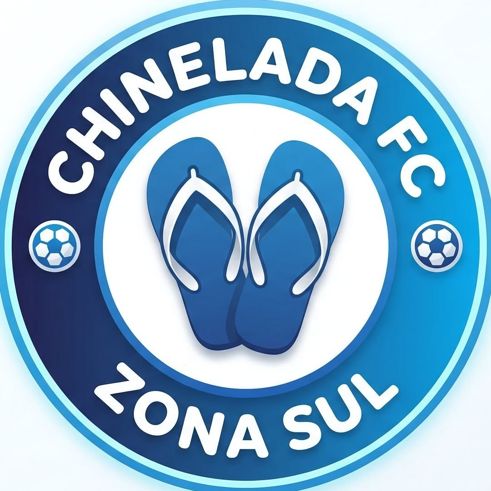

Chinelada FC
Time de FUT7 • São Paulo
Futebol, competição e resenha.
🏆 Campeonato de FUT7
Chinelada Cup
Acompanhe jogos, resultados, novidades e tudo sobre a competição.
ACESSAR CHINELADA CUP →
Redes Oficiais

Time de FUT7 • São Paulo
Futebol, competição e resenha.